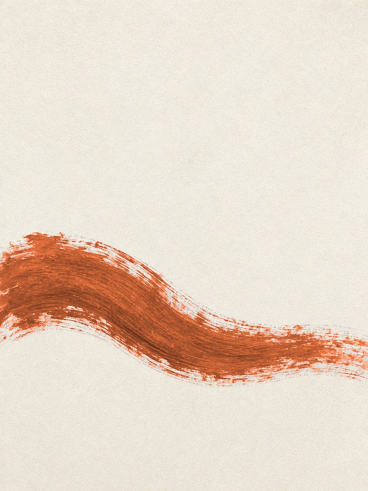

The Studio
Editorial
Identity became rare.
People lead the work. The technology stays underneath.
Identity
SOFORTH
Visual and verbal, held as one account.
Digital
Your company, understood over time.

Content
We make meaning.
The same decision, held on a page, in a post, and in a note.
Soforth’s own applications for this concept. Not a client project.